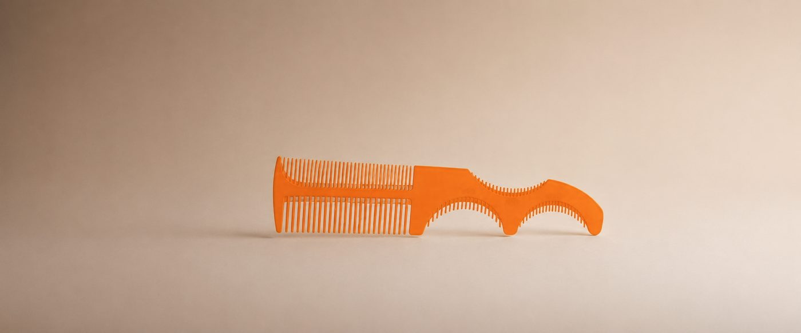
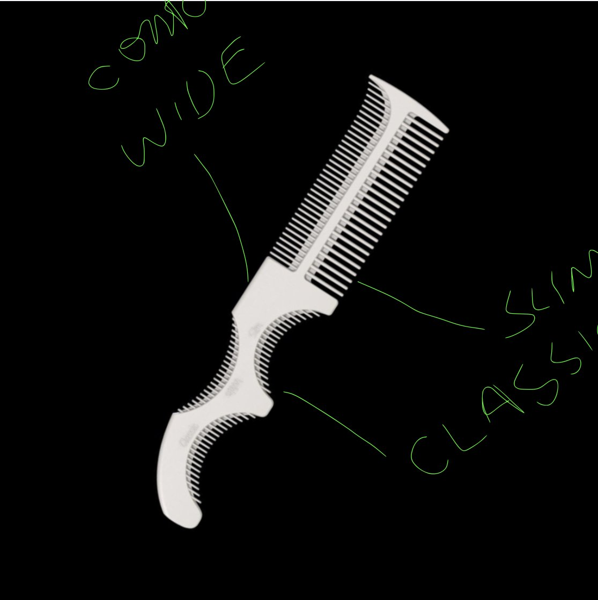
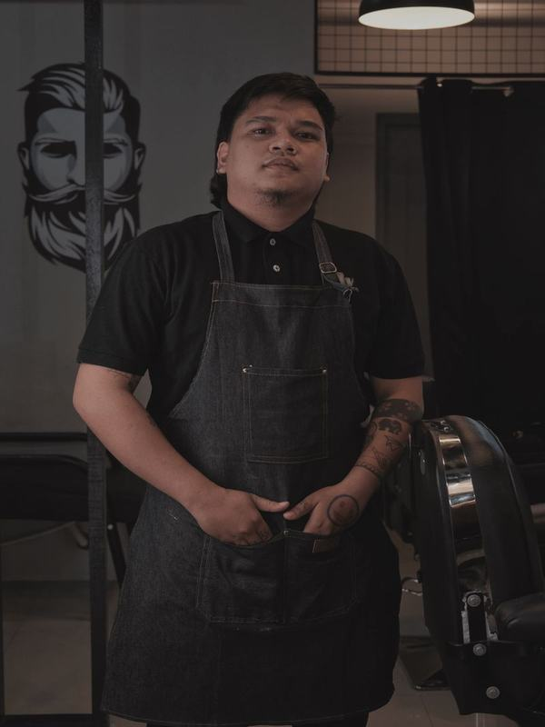
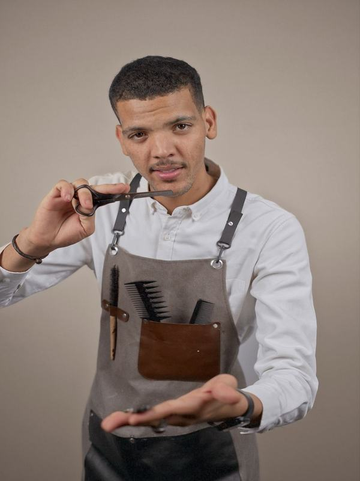
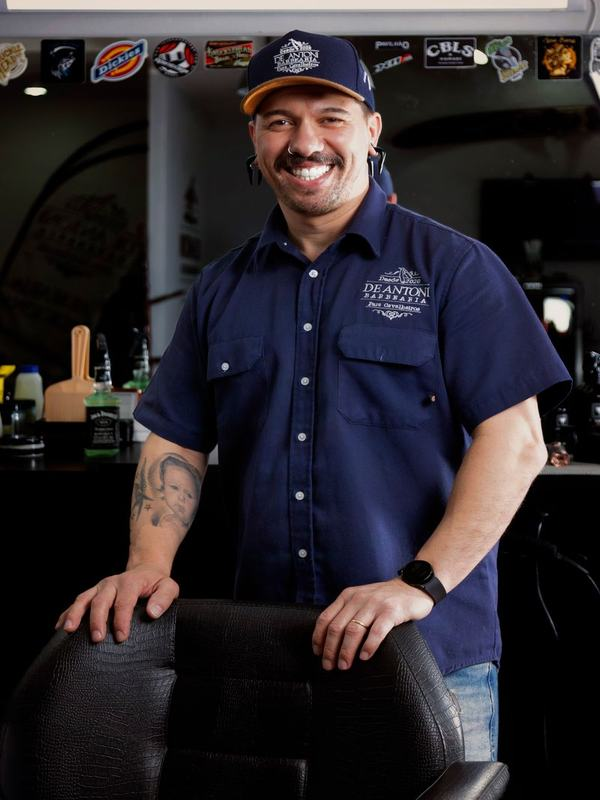
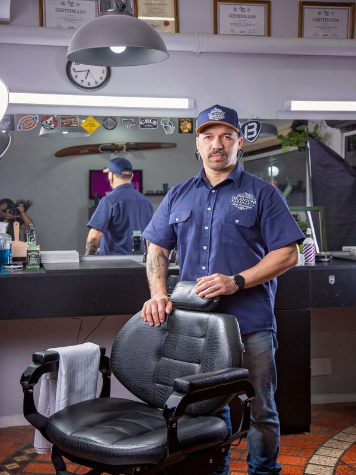
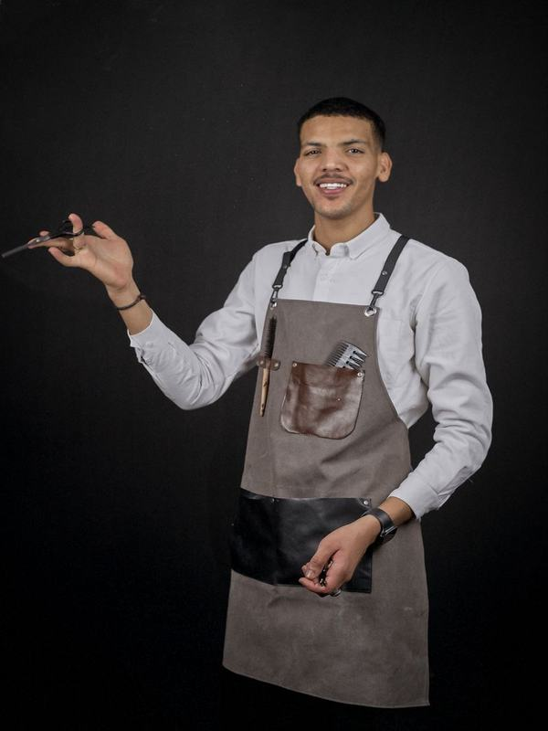
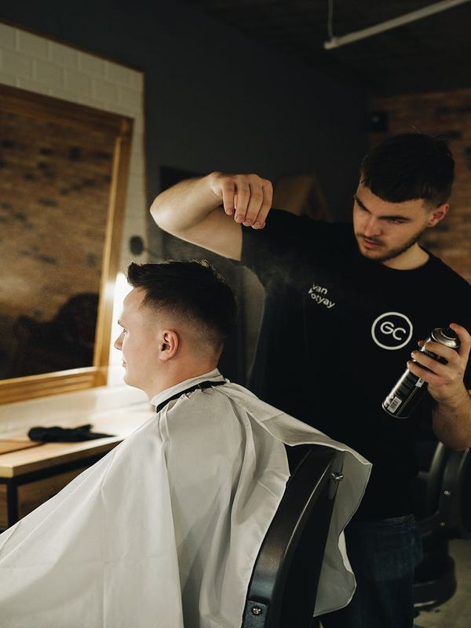

Classic
A medida Classic adapta-se à maioria dos clientes, proporcionando um contorno equilibrado e natural.
Precisão e versatilidade reconhecidas por profissionais

Muito mais do que um pente tradicional, o CurveLine Beard Pro foi desenvolvido para acompanhar diferentes formatos de contorno inferior da barba.
A medida Classic adapta-se à maioria dos clientes, proporcionando um contorno equilibrado e natural.
A medida Slim foi desenvolvida para curvas mais fechadas e anguladas, oferecendo maior precisão nas zonas de execução mais exigentes.
A medida Wide é ideal para contornos mais abertos, permitindo um trabalho mais rápido e consistente.
Na parte traseira, a ponta ligeiramente curva facilita a ligação entre a linha inferior central da barba e as laterais, garantindo uma transição mais fluida e um acabamento uniforme.
Material profissional com acabamento que garante durabilidade e precisão em cada utilização.

O CurveLine Beard Pro não é apenas um pente — é uma ferramenta desenhada para barbeiros que exigem controlo total na definição da barba.
Conheça as diferentes possibilidades do CurveLine Beard Pro e descubra a medida ideal para cada cliente.
Classic para contornos equilibrados, Slim para curvas fechadas, Wide para contornos abertos.
Encoste a curva do pente na linha inferior da barba, alinhando com o contorno desejado.
Com o pente posicionado, utilize a máquina ou navalha para cortar ao longo da guia.
Utilize a ponta curva traseira para ligar a linha inferior central às laterais.
Barbeiros e criadores que usam o CurveLine Beard Pro todos os dias — e fazem parte da nossa comunidade.






«Produto de alta qualidade, envio rápido e acabamento premium.»
«Finalmente um pente que me dá o controlo todo que preciso na linha da barba. O Classic é o meu favorito.»
«A ponta curva traseira faz toda a diferença — as transições ficam perfeitas. Recomendo a todos os colegas.»
«Uso o Slim para contornos fechados e o Wide para o peito — um kit completo para qualquer barbeiro.»
«Os clientes notam a diferença. O acabamento é profissional e o pente dura imenso tempo.»
«Edição limitada que vale a pena ter. A qualidade do material é incomparável com outros pentes do mercado.»